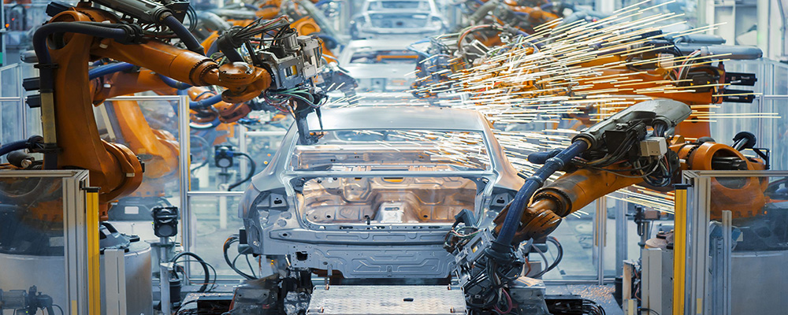

home>연구개발> 중공업 연구소
중공업 연구소

“글로벌 최고 수준의 기술로 고객가치에 항상 노력하겠습니다.”

세계 최고의 R&D
세계 최고의 R&D
위한 끊임없는 도전
중전기, 전력전자, 전력자동화 솔루션, 에너지 시스템 분야의 핵심기술과 제품 개발을 담당하는 중공업연구소는 오늘날 효성을 중전기와 에너지 분야의 세계적 기업으로 이끈 씽크탱크입니다. 대한민국 기술대상을 수상한 100MVA STATCOM를 비롯해 에너지대상의 원자력발전소용 345kV 변압기, 장영실상을 받은 800kV 2점절 가스절연 개폐기 등 한국 최초의 수식어가 붙은 수많은 핵심기술과 세계 두 번째의 극초고압 차단기인 1100kV 가스절연개폐장치(GIS) 등 최초, 최고를 향한 기술 도전의 역사를 써 내려 온 중공업 연구소는 기존 중전기 제품 의 경쟁력 강화를 위한 솔루션 분야 연구와 함께 최고의 기술을 최고의 제품에 담아내기 위해 신뢰성 평가센터를 구축, 품질경쟁력 확보를 위한 연구를 수행하고 있습니다.
연구분야
-
- 01
- 전력기기용 해석 프로그램 개발
- 02
- STATCOM
(STATic synchronous COMpensator)
- 03
- ESS
(Energy Storage System)
- 04
- 전압형
HVDC (High Voltage Direct Current Transmission system)
- 05
- 전력설비 자산관리솔루션 AHMS
(Asset Health Management Solution)
주요개발 연혁
-
- 2020년
- 200MW 전압형 HVDC 시스템 개발을 위한 서브모듈 및 제어기 시제품
- 제작, 국내 PV 연계 대용량 ESS 시장 대응용 효율 98.7%, 2.5MW모듈라
- PCS 개발, 모잠비크 전력청 AMS 개발 및 구축, 디지털변전소 대응을
- 2018년
- 20MW BTB MMC HVDC 실증사이트 구축 및 실증 시험 완료
- 400MVar 급 MMC STATCOM 준공 (한국전력 신영주, 신충주 변전소)
- 2017년
- 통합 ESS Control Solution 개발, 김제변전소 옥내형 FR용 48MW ESS 스테이션 상업운전,
- 한전 주파수 조정용 2MW ES PCS 개발(한전 3차 사업 수주, 김제변전소 48MW),
- 2016년
- 154kV급 변압기/GIS용 Asset Management Solution 개발(국내 최초),
- IE4급 LS-SynRM 3.7kW 개발 (세계 최초 직입구동 자기저항형 동기 전동기 개발)
- 2015년
- 한국수력원자력 경주 본사사옥 에너지 절감용 ESS(1MW PCS / 2MWh Battery)
- 50MW급 MMC STATCOM KEMA 인증 획득, IE4 슈퍼프리미엄급SynRM 전동기 45kW 이하 Line up
- 2015년
- 한국수력원자력 경주 본사사옥 에너지 절감용 ESS(1MW PCS / 2MWh Battery)
- 50MW급 MMC STATCOM KEMA 인증 획득, IE4 슈퍼프리미엄급SynRM 전동기 45kW 이하 Line up
- 2014년
- 신재생 에너지 연계형 MW급 배터리 에너지 저장시스템, 20MW급 VSC HVDC 개발,
- 150MW급 MMC STATCOM 개발
- 2013년
- 독립형 마이크로그리드시스템, IE4(슈퍼프리미엄 효율) SynRM 전동기
- 2012년
- 1MW ESS, 250kW/500kW PV PCS, EMS, 전기차용 80kW PMSM, 80kW PMSM용Drive,
- 전기차 충전인프라, 1kW Dual Cell Stack, 1kW 직접수소type PEMFC 시스템, 변압기 부분 방전 진단 시스템
- 2008년
- 계통연계형 태양광 인버터 (3kW, 50kW, 250kW), 1kW급 PEMFC 가정용 발전 시스템,
- 친환경 25.8kV 25kA Dry AirInsulated Switchgear (DAIS) (국내최초),
- 2006년
- 10MVA STATCOM, GIS용 부분방전진단 시스템, 송전급FACTS 기기 핵심부품 국산화 (국내최초)
- 2003년
- 362kV 50kA GIS (국내최초), 154kV 80MVA UPFC (FACTS) pilot plant (국내최초)
- 2001년
- 154kV 40MVA FACTS용 변압기, 극간콘덴서 불용형 170kV 가스차단기
- 1999년
- 800kV 초고압 차단기, 765kV 변전기기 예방진단 시스템, 200kW 가스엔진 열병합시스템,
- 1992년
- 765kV 변압기 (국내최초)
- 1990년
- 154kV 상분리형 변압기 (3ph 154kV 386MVA)